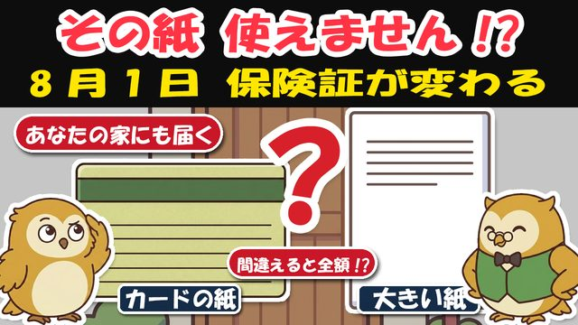
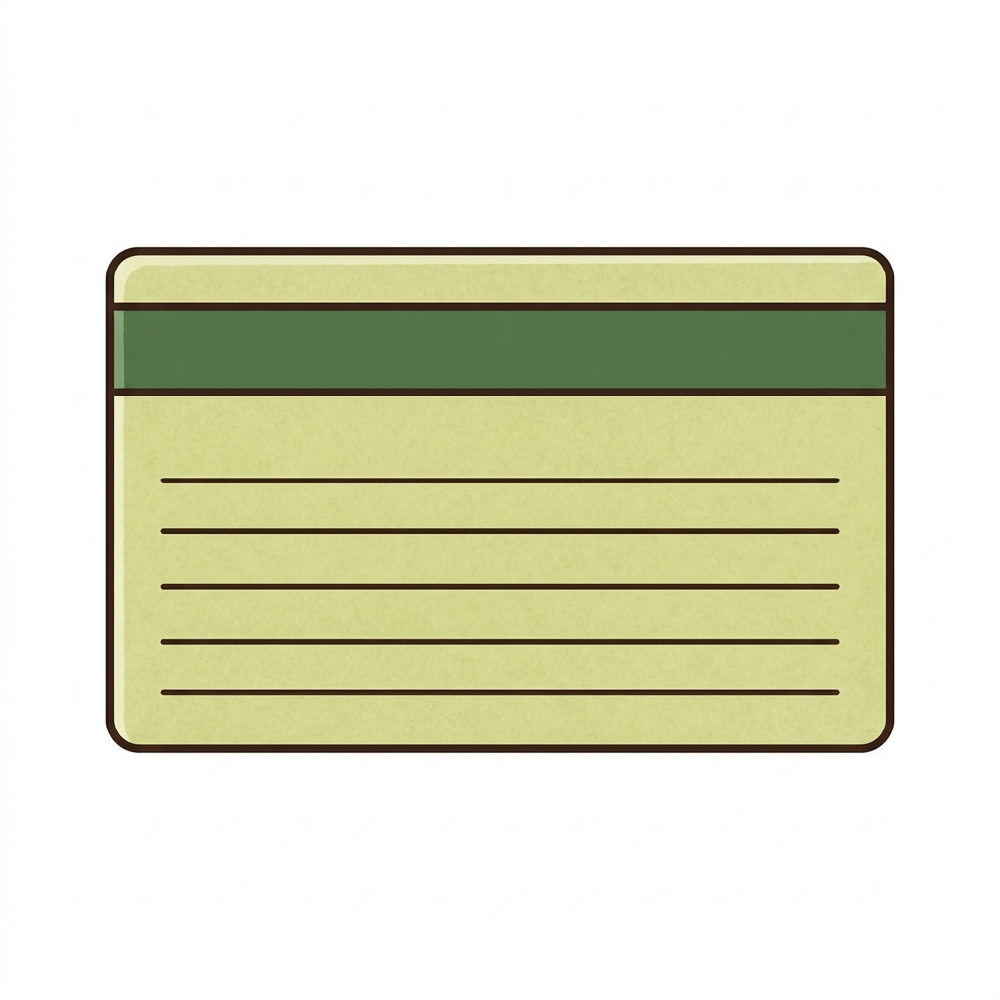

🎁 保険証切り替えチェック表（届いた紙どっち判定＋病院の持ち物リスト）

よく来たな。約束の物を渡す。
この夏、保険の封筒が2種類に分かれて届く。そっくりで間違えやすいが、この1枚で仕分けられる。
冷蔵庫の横にでも貼って、家族の分まで一緒に確かめてほしい。
🔀 届いた紙どっち判定（はい/いいえで進むだけ）

Q1. 封筒から出てきたのは、カードの形の紙？（保険証と同じ大きさ）
- はい → それは「資格確認書」。💮 その1枚で病院OK（今まで通り出すだけ。有効期限の日付だけ見ておく）
- いいえ（大きいA4の紙） → Q2へ
Q2. その紙の名前は「資格情報のお知らせ」？
- はい → ⚠️ その紙“だけ”では病院に入れない。あなたはマイナ保険証の登録がある人だ → Q3へ
- いいえ／何も届かない → 慌てなくてよい。保険そのものは切れていない。発送は地域で時期が違う。8月を過ぎても届かなければ、市区町村の窓口へ電話
Q3. マイナ保険証、病院で使える？（使い方が分かる？）
- 使える → 💮 病院はマイナカード1枚でOK（顔認証なら暗証番号も不要）。「お知らせ」はカードに添える予備として財布へ
- 使いたくない・不安 → 利用登録は申請で解除できる。解除すれば資格確認書が届く（暗証番号が不安・施設暮らしなども申請OK。委任状があれば家族の代理申請もできる）
※「お知らせ」の下に切り取りカードが付く地域もあるが、切り取っても単体では使えない。
※85歳以上は多くの地域で、申請なしで資格確認書が届く（取り扱いは広域連合・自治体で異なる）。
👜 8月からの「病院の持ち物」リスト
| あなたのタイプ | 病院に持って行く物 |
|---|---|
| 紙派（資格確認書が届いた） | ✅ 資格確認書 1枚（今まで通り） |
| マイナ派（お知らせが届いた） | ✅ マイナカード 1枚（顔認証OK） |
| 迷う人・機械が苦手 | ✅ マイナカード ＋ お知らせの両方（これで間違いない） |
□ 今日やること：①封筒を開ける ②どっちの紙か確かめる ③病院セットを財布に入れる
□ 離れて住む家族には電話で2つ聞く：「封筒は開けた？」「病院でマイナカードを使ってる？」——答えで届くはずの紙が分かる。
□ 期限切れの古い紙は個人情報のかたまり。細かく切って捨てる。
⚠️ 便乗詐欺に注意：「切り替えに手数料」「カードを預かります」は全部詐欺。役所が電話で暗証番号・口座を聞くことはない。迷ったら、いったん切る。
⚠️ マイナカードを失くしたら：24時間365日の電話窓口（マイナンバー総合フリーダイヤル 0120-95-0178）で一時停止できる。保険は消えない＝資格確認書を申請すればよい。
🎁 動画で話していない「全額払った時の戻し方」（おまけ）
紙がなくていったん全額（10割）払っても、お金は取り戻せる。手順はこれだけだ。
- 領収書と明細書を捨てない（これが命綱。再発行できない病院もある）
- まずは同じ月のうちに、正しい紙（またはマイナカード）を持ってその病院の窓口へ——その場で差額を返してくれる医院も多い
- 間に合わなければ、加入先の保険の窓口（後期高齢者医療＝市区町村の役所／国保＝同じく役所／会社の健康保険＝健保組合）で「療養費の支給申請」——かかった費用のうち本来の自己負担分との差額が戻る
- 申請の期限は2年。必要な物のめやす＝領収書・明細書・振込先・マイナカード等の本人確認書類（窓口により異なる）
例：かぜの診察＋薬でざっと6,000円（10割）→ 1割の人なら本来600円 → 差額約5,400円が戻る（内容により金額は変わる・試算）。
⚠️ 本資料は教育目的の一般的な情報だ。制度は2026年7月時点の公表情報に基づくめやすで、資格確認書・資格情報のお知らせの交付や発送時期、申請の必要書類はお住まいの地域・加入する医療保険で変わる（出典＝厚生労働省・各後期高齢者医療広域連合・マイナンバーカード総合サイトほか）。実際の判断は、市区町村の窓口や加入先の医療保険の窓口で必ず確かめてほしい。

病院で慌てないために——封筒は、今日開ける。次の贈り物も、このLINEで届ける。— フク先生（老後資金の止まり木）